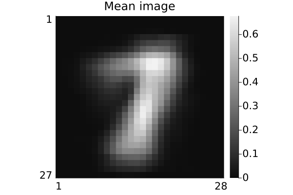
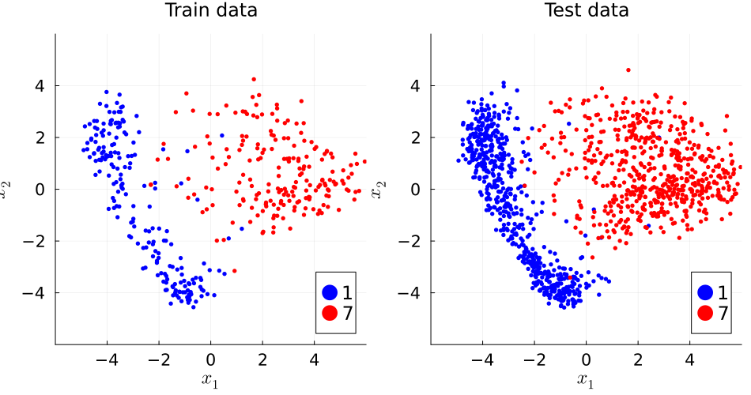
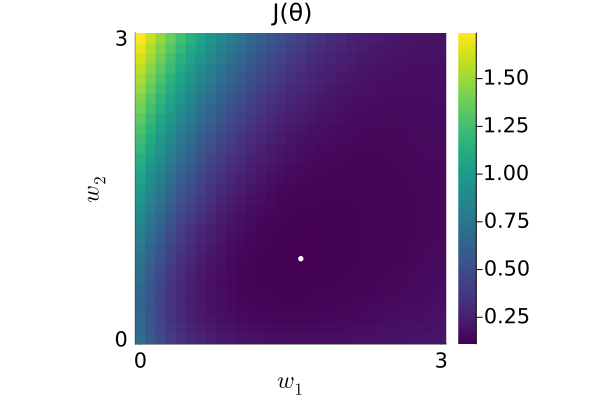
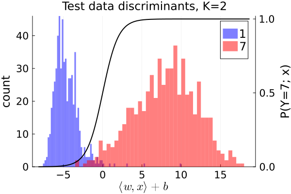

Logistic regression demo
Illustrate logistic regression with MNIST hand-written digit images in Julia.
This page comes from a single Julia file: logistic17.jl.
You can access the source code for such Julia documentation using the 'Edit on GitHub' link in the top right. You can view the corresponding notebook in nbviewer here: logistic17.ipynb, or open it in binder here: logistic17.ipynb.
Setup
Add the Julia packages used in this demo. Change false to true in the following code block if you are using any of the following packages for the first time.
if false
import Pkg
Pkg.add([
"ADTypes"
"ForwardDiff"
"InteractiveUtils"
"LaTeXStrings"
"LinearAlgebra"
"MIRTjim"
"MLDatasets"
"Optim"
"Plots"
"Statistics"
])
endTell Julia to use the following packages. Run Pkg.add() in the preceding code block first, if needed.
using ADTypes: AutoForwardDiff
import ForwardDiff
using InteractiveUtils: versioninfo
using LaTeXStrings: @L_str, latexstring
using LinearAlgebra: svd, det
using MIRTjim: jim, prompt
using MLDatasets: MNIST
using Optim: optimize, LBFGS, minimizer
using Plots: default, gui, savefig, RGB, cgrad, twinx
using Plots: plot, plot!, scatter!, histogram!
using Random: randperm, seed!
using Statistics: mean
default(); default(markersize=3, markerstrokecolor=:auto, label="",
tickfontsize=14, labelfontsize=16, legendfontsize=16, titlefontsize=16)The following line is helpful when running this file as a script; this way it will prompt user to hit a key after each figure is displayed.
isinteractive() ? jim(:prompt, true) : prompt(:draw);Load data
Read the MNIST data for some handwritten digits. This code will automatically download the data from web if needed and put it in a folder like: ~/.julia/datadeps/MNIST/.
if !@isdefined(data) # || true
digitn = [1,7]
isinteractive() || (ENV["DATADEPS_ALWAYS_ACCEPT"] = true) # avoid prompt
dataset = MNIST(Float32, :train)
nrep = 1000 # how many of each digit
# function to extract the 1st `nrep` examples of digit n:
data = n -> dataset.features[:,:,findall(==(n), dataset.targets)[1:nrep]]
data = cat(dims=4, data.(digitn)...)
labels = vcat([fill(d, nrep) for d in digitn]...) # to check later
nx, ny, nrep, ndigit = size(data)
data = data[:,2:ny,:,:] # make images non-square to force debug
ny = size(data,2)
size(data) # (nx, ny, nrep, ndigit)
end(28, 27, 1000, 2)Look at some of the image data
pd = jim(data[:,:,1:10,:], "Data, d=$(nx*ny), N=$(nrep*ndigit)";
colorbar=nothing, size=(600,200), tickfontsize=6, ncol=10)
digit_str = join(digitn); # string for file names
# savefig(pd, "lr$digit_str-digit.pdf")"17"Partition data into train / validate / test
ntrain = 200
nvalid = 100
ntest1 = 600
seed!(0)
tmp = randperm(nrep)
itrain = (1:ntrain)
ivalid = (1:nvalid) .+ ntrain
itest1 = (1:ntest1) .+ (ntrain + nvalid)
dtrain = data[:,:,tmp[itrain],:]
dvalid = data[:,:,tmp[ivalid],:]
dtest1 = data[:,:,tmp[itest1],:];Sample means of training images:
dmean = sum(dtrain, dims = 3:4) / ntrain / ndigit
pm = jim(dmean; title="Mean image")
# savefig(pm, "lr$digit_str-mean.pdf")
PCA-based dimensionality reduction
Use two components for easy visualization
X = reshape(dtrain .- dmean, nx*ny, :) # unfold
K = 2
U = svd(X).U[:,1:K];Show basis vectors
tmp = reshape(U, nx, ny, K)
pu = jim(tmp; nrow=1, title="Basis functions, K=$K", color=:cividis,
size=(700, K==2 ? 400 : 150), colorbar_ticks = [0])
# savefig(pu, "lr$digit_str-basis-$K.pdf")
prompt()Visualize embedded data
embed(data, n) = reshape(U' * reshape(data .- dmean, nx*ny, :), K, n, :)
Xtrain = embed(dtrain, ntrain) # (K, ntrain, ndigit)
Xvalid = embed(dvalid, nvalid)
Xtest1 = embed(dtest1, ntest1)
labeler(n) = vcat([fill(digitn[id], n) for id in 1:ndigit]...)
ytrain = labeler(ntrain)
yvalid = labeler(nvalid)
ytest1 = labeler(ntest1)
args = (;
xaxis = (L"x_1", (-1,1) .* 6, -4:2:4),
yaxis = (L"x_2", (-1,1) .* 6, -4:2:4),
aspect_ratio = 1,
size = (550, 500),
)
petr = plot(; title = "Train data", args...)
pete = plot(; title = "Test data", args...)
colors = (:blue, :red)
for id in 1:ndigit
scatter!(petr, Xtrain[1,:,id], Xtrain[2,:,id], label="$(digitn[id])",
color = colors[id])
scatter!(pete, Xtest1[1,:,id], Xtest1[2,:,id], label="$(digitn[id])",
color = colors[id])
end
pp = plot(petr, pete; size = (950, 500))
prompt()
# savefig(pp, "lr$digit_str-embed.pdf")Logistic classifier design
First set up the ERM cost function (regularized negative log-likelihood) using the {0,1} label formulation.
data matrices should be d × nₖ
function model_setup(data0::AbstractMatrix, data1::AbstractMatrix, reg::Real)
n0, n1 = size(data0,2), size(data1,2)
n = n0 + n1 # total number of training samples
data0_bar = [ones(1, n0); data0]
data1_bar = [ones(1, n1); data1]
nl_sigma1(x) = log(1 + exp(-x)) # negative of log of σ
nl_sigma0(x) = log(1 + exp(+x)) # negative of log of 1 - σ
cost(θ) = (1/n) * (
sum(nl_sigma0, θ' * data0_bar) +
sum(nl_sigma1, θ' * data1_bar)) + reg/2 * sum(abs2, θ)
return cost
end;No regularization for now because low dimensional space:
erm_cost = model_setup(Xtrain[:,:,1], Xtrain[:,:,2], 0);Explore cost function
Make 2D plot for $θ = [0, w_1, w_2]$
ws = range(-0, 3, 31)
cost2 = [erm_cost([0; w1; w2; zeros(K-2)]) for w1 in ws, w2 in ws]
pc = jim(ws, ws, cost2; title = "J(θ)",
xlabel = L"w_1", ylabel = L"w_2", color = :viridis, yflip=:false)
tmp = argmin(cost2)
scatter!(pc, [ws[tmp[1]]], [ws[tmp[2]]], color = :white) # show minimizer
prompt()Minimize via LBFGS quasi-Newton (QN) method
The "L" is for limited memory which is unimportant for this d=2 setting, but is useful when applying QN to the original data.
θ0 = zeros(K+1)
opt = optimize(erm_cost, θ0, LBFGS(); autodiff = AutoForwardDiff())
θhat = minimizer(opt)3-element Vector{Float64}:
1.7620720137673949
2.1160292851975386
1.0692373446632841Logistic regression discriminant function
function lr_discriminant(x::AbstractVector; θ::Vector = θhat)
return θhat' * [1; x]
end;Logistic regression classifier that returns digit labels (not 0,1)
function lr_classify1(x::AbstractVector; θ::Vector = θhat)
return lr_discriminant(x; θ) ≥ 0 ? digitn[2] : digitn[1] # labels!
end;Plot decision boundary
(Only makes sense for K=2.)
α = 0.2
color = cgrad([RGB(1-α, 1-α, 1), :black, RGB(1, 1-α, 1-α)])
x1_range = range(-6, 6, 221)
x2_range = range(-6, 6, 223)
sigma(x) = 1 / (1 + exp(-x))
function lr_plot(train_error::Real = NaN, test_error::Real = NaN;
classifier::Function = lr_classify1,
title::AbstractString =
"L.R. train error=$train_error %, test error = $test_error %",
θ::Vector = θhat,
)
tmp = [lr_discriminant([x1; x2; zeros(K-2)]) for x1 in x1_range, x2 in x2_range]
tmp = sigma.(tmp)
p = jim(x1_range, x2_range, tmp; color, title, prompt = false,
clim = (0,1), colorbar_ticks = 0:0.5:1, # digitn,
args...)
for id in 1:ndigit
scatter!(p, Xtrain[1,:,id], Xtrain[2,:,id],
color = colors[id],
label = "$(digitn[id])",
)
end
boundary = (-θ[1] .- θ[2] * x1_range) / θ[3]
plot!(p, x1_range, boundary, color = :magenta) # decision boundary
return p
end;Classification errors
for train / validate / test
function errors(data, label; classifier::Function = lr_classify1)
data = reshape(data, K, :) # (d, n)
err = count(classifier.(eachcol(data)) .!= label) / size(data, 2)
return round(100 * err; sigdigits = 3)
end
train_error = errors(Xtrain, ytrain)
valid_error = errors(Xvalid, yvalid)
test1_error = errors(Xtest1, ytest1)
err1 = [train_error valid_error test1_error]1×3 Matrix{Float64}:
3.0 3.5 2.0Plot data and decision regions:
p0 = lr_plot(train_error, test1_error)
prompt()
# savefig(p0, "lr$digit_str-v1.pdf")Histograms of discriminant values
ph = plot(xlabel = L"⟨w,x⟩+b", ylabel = "count",
title = "Test data discriminants, K=$K")
tmp = Vector{Any}(undef, ndigit)
for id in 1:ndigit
tmp[id] = map(lr_discriminant, eachcol(Xtest1[:,:,id]))
histogram!(ph, tmp[id], bins = 80,
color = colors[id], linealpha = 0, linecolor = nothing, alpha = 0.5,
label = "$(digitn[id])")
end
plot!(twinx(), sigma; color = :black, linewidth = 2,
yaxis = ("P(Y=$(digitn[2]); x)", (0,1.02), 0:0.5:1))
ph
# savefig(ph, "lr$digit_str-ph-$K.pdf")
prompt()This page was generated using Literate.jl.